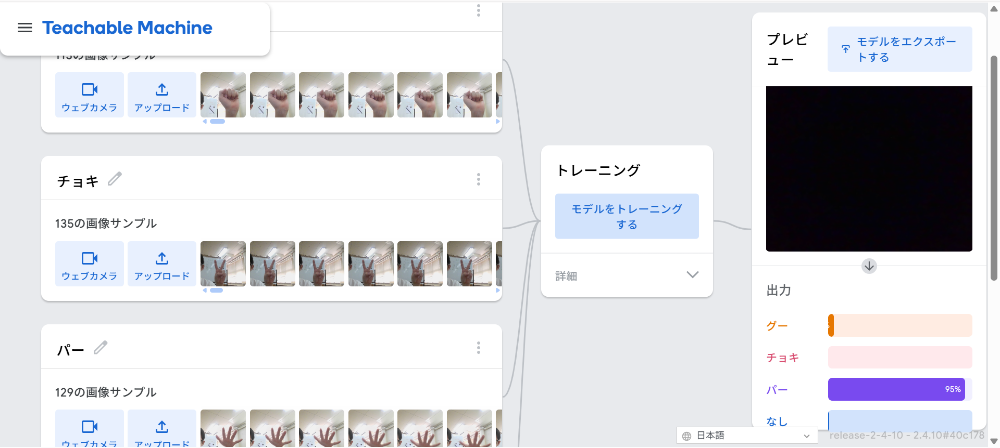
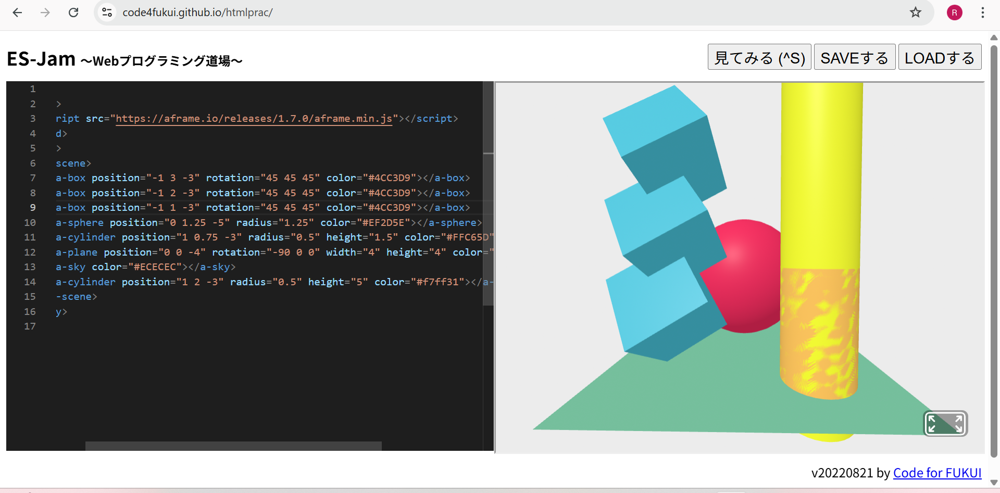

第2週目
2-1 2週目のレポートをHTMLで作る
1.内容
githubを使って今回の授業のレポートを作成する方法と作成するときの注意点
2.感想
自分のウェブサイトでレポートを書くという中学校ではありえなかった環境に自分は今高専生なんだなと再認識することができました
実は春休みの半ばからhtmlについて少し勉強していたのでhtmlでレポートを作れることがうれしいです
まだわからないこともたくさんありますがhtmlのコードを１から全部かけるように頑張りたいです
githubを使って今回の授業のレポートを作成する方法と作成するときの注意点
2.感想
自分のウェブサイトでレポートを書くという中学校ではありえなかった環境に自分は今高専生なんだなと再認識することができました
実は春休みの半ばからhtmlについて少し勉強していたのでhtmlでレポートを作れることがうれしいです
まだわからないこともたくさんありますがhtmlのコードを１から全部かけるように頑張りたいです
2-2 機械学習体験

1.内容
Geminiについての説明とteachble machinを使ってグーとチョキとパーを覚えさせる
またstretch3を使って少しプログラミングを行った
2.感想
僕は以前体験授業で知能情報コースを受講したので内容はある程度分かっていました
それでもやっぱり機械学習は楽しいです。機械がちゃんと
思った通りに動いてくれると嬉しいです。
次はプログラムを作ってじゃんけんができるようにしてみたいです
Geminiについての説明とteachble machinを使ってグーとチョキとパーを覚えさせる
またstretch3を使って少しプログラミングを行った
2.感想
僕は以前体験授業で知能情報コースを受講したので内容はある程度分かっていました
それでもやっぱり機械学習は楽しいです。機械がちゃんと
思った通りに動いてくれると嬉しいです。
次はプログラムを作ってじゃんけんができるようにしてみたいです
2-3 VR（バーチャルリアリティー：Virtual Reality）の体験

VRゴーグルでROBLOXとWookroomsの体験
ROBLOX内の高専に訪れたり周りの散策をしたりした
2.感想
今回人生で初めてVRを体験しました
思ったより操作が簡単だったけど視点を移動するとき一回暗転を挟むので目がちかちかしました
ほっぺが痛くもなりましたが、貴重な体験ができて楽しかったです。